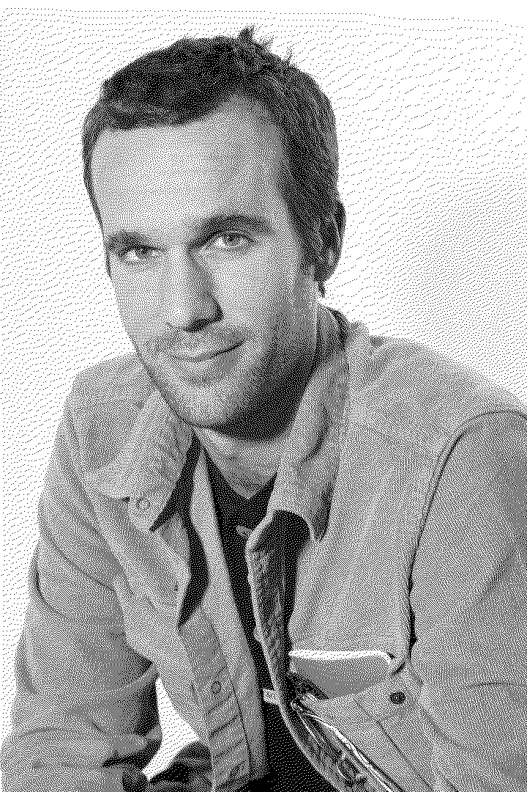

Desde el 2013.
Trabajo como profesional independiente, colaborando con diferentes artistas y desarrolladores según las características del proyecto. Me encargo también del mantenimiento mensual para asegurar la seguridad y estabilidad del ecosistema. Mis presupuestos se adaptan a los diferentes perfiles de cliente. Estoy abierto a escuchar propuestas experimentales para aquellas personas que busquen una web diferente.
Actualmente trabajo como digital nomad en una autocaravana equipada con tecnología solar. Suelo estar por la zona centro (La Pedriza) o surfeando por el norte. Igualmente tengo disponibilidad para viajar si el proyecto lo requiere.
Llámame o escríbeme sin compromiso.
— Raúl Serrano
